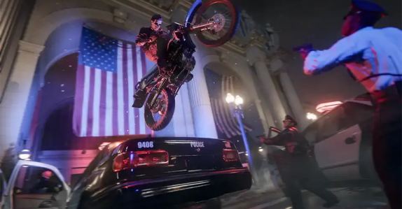
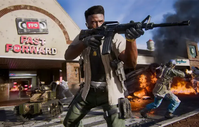
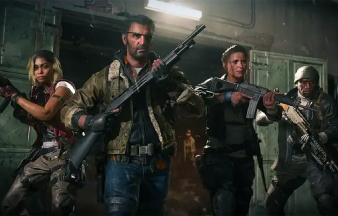

Call of Duty: Black ops 6

Alors que la guerre du Golfe est sous les feux de la rampe mondiale, une force clandestine obscure a infiltré les plus hauts niveaux de la CIA, qualifiant de traîtres tous ceux qui résistent. Exilés de leur agence et de leur pays qui les saluaient autrefois comme des héros, le vétéran des Black Ops, Frank Woods et son équipe, se retrouvent traqués par la machine militaire qui les a créés.

Gameplay

Multijoueur
Dans le Multijoueur de Black Ops 6, les joueurs testeront leurs compétences sur 16 nouvelles cartes au lancement, dont 12 cartes standard 6v6 et 4 cartes de combat qui peuvent être jouées en 2v2 ou 6v6. De plus, les joueurs verront le retour d’un système de Prestige plus traditionnel, plus grand et plus gratifiant que jamais.

Zombies
Black Ops 6 marque également le retour du mode Zombies par manches, le mode préféré des fans où les joueurs élimineront des hordes de morts-vivants dans deux nouvelles cartes au lancement. Après le lancement, les joueurs peuvent s’attendre à des cartes encore plus excitantes et à des expériences révolutionnaires en Multijoueur et en Zombies.Découvrir nos autres articles
 Hack and slash
Hack and slash
Diablo 4
11 Décembre 2024
 Moba
Moba